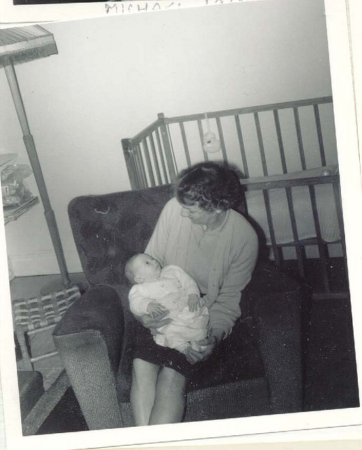

What CC means for your Gran (or Grandchild)
BY MIKE RIVERSDALE
 "Mike and Nanna 14 Days Old" by Mike Riversdale. CC BY
{kind=link}
Every family has its story.
As we commemorate 100 years of the beginning of World War 1, a lot of us are tracking down our grandparents stories, how the soldiers within in our families fought and died, how those back at home coped with the hardships and the many years of repercussions as the scars, both external and internal, came home.
Together with these ‘big event’ stories, we all have a myriad of everyday tales that we commonly think of as particular to ourselves, memories of days gone past and yarns to be recounted at family get-togethers. And of course we all have our recent stories: last year’s summer holiday, the kid’s birthday celebration and even that catch up with mates in the pub last week.
All of these stories go to make up the fabric of our families, our friendships and our whanau - without them we are indeed islands and, as we all know, “No man is an island”.
So what does Creative Commons licences have to do with this collection of stories spanning the generations in your family?
Outside of verbal histories (or in some cases myths and even our own family urban legends) we gain insight into our earliest stories from the writings, photographs and, if we’re lucky, film left behind by our ancestors. As time passes on, these artefacts enter the “public domain" (also know as “no known copyright”) and come to possess, as we see in the personal histories and stories being used in the World War 1 commemorations across the Internet, a sense of common / shared knowledge.
Hearing Gran recall her childhood stories, during those fleeting times that she wants to tell us and we are old enough to listen, are special moments. But when we touch, see and hear from the artefacts of her days -- such as her father’s diaries scribbled during the battles -- we are immediately connected in a far more visceral manner. We feel it as part of our own story.
Taking a step sideways for second, we are all keenly aware, especially in times of emergency and hardship, that families that play together stay together. These communities of families are the coming together of stories shared across the whanau boundary as they build, one upon the other, flowing across and through to make the very fabric of our society.
As stories are shared, the artefacts (diaries, cine film, video tapes, clothes, tapes) become the ‘facts’ upon which we all stand. Locking up these artifacts with individuals and inside families could slowly diminish our sense of society, community and shared being.
However, letting Gran’s artefacts go to the vagaries of the ‘marketplace’ is not something many of us feel comfortable with - these are OUR stories and we want them to be treasured and loved as much as we do.
Creative Commons licences allows us to think into the future, to place our own wishes upon our photos, to let future generations know how we’d like our stories to be shared.
Some may indeed want to reserve all rights and keep the diaries away from the commercial world. Others may want the great great grandchildren to know that the re-use of the 1970’s holiday film would be welcome as long as it wasn’t for monetary gain (that’s a BY-NC licence). In fact, most of use will choose different approaches for different artefacts - the diary is for certain eyes and not to be shared, the photos of beaches are for all to use however they want and in whatever manner and tools people have in the future.
Creative Commons licences allows all of us, including your Gran, to make a conscious and active choice - this is how our stories can be reused. And for your great grandchildren, or even your cousins third nephew twice removed, this allows them the freedom to take those memories and incorporate them into their own stories, creating a richer a deeper society for all.
Mike Riversdale helps individuals and companies become more successful by motivating, mentoring and supporting their technical/information teams. He is on Twitter @miramarmike and is the co-host of the Access Granted podcast.